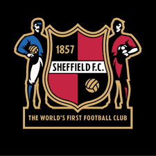

Curiosidades do Futebol Europeu

1. O Clube Mais Antigo do Mundo
O Sheffield FC, fundado em 1857 na Inglaterra, é reconhecido como o clube de futebol mais antigo do mundo. Ele foi o pioneiro em estabelecer regras para o esporte.

2. A Liga dos Campeões da UEFA
Criada em 1955, a Liga dos Campeões é a competição de clubes mais prestigiada do mundo. O Real Madrid é o maior vencedor, com 14 títulos até hoje.

3. A Maior Goleada da História
A maior goleada de uma competição europeia aconteceu em 1974, quando o Feyenoord venceu o Reykjavík por impressionantes 12x2 na Liga dos Campeões.

4. O Estádio de Wembley
Localizado em Londres, o Wembley Stadium é considerado o "templo do futebol". O estádio original foi inaugurado em 1923 e reconstruído em 2007, mantendo seu status icônico.

5. A Origem da Premier League
A Premier League, considerada a liga mais competitiva do mundo, foi criada em 1992 para substituir a antiga primeira divisão inglesa, trazendo um novo modelo financeiro para o futebol.

6. Lionel Messi e Cristiano Ronaldo
Os dois jogadores dominaram o futebol europeu por mais de uma década. Juntos, somam mais de 10 Bolas de Ouro e são os maiores artilheiros da Liga dos Campeões.

7. A Bundesliga e o Bayern de Munique
A Bundesliga, liga profissional alemã, foi fundada apenas em 1963, relativamente tarde em comparação com outros países. O Bayern de Munique é o clube mais dominante, com mais de 30 títulos nacionais.

8. A Rainha do Futebol Feminino Europeu
A seleção feminina da Alemanha é a mais vitoriosa na Europa, com 8 títulos da Eurocopa, consolidando sua supremacia no futebol feminino.

9. Os Invencíveis do Arsenal
Na temporada 2003-2004, o Arsenal conquistou a Premier League sem perder nenhum jogo, um feito histórico e raro no futebol europeu.

10. A Primeira Copa Europeia de Seleções
A primeira Eurocopa aconteceu em 1960, com a vitória da União Soviética. Hoje, o torneio é um dos maiores eventos esportivos do mundo.

11. O Clássico El Clásico
O confronto entre Real Madrid e Barcelona, conhecido como "El Clásico", é uma das rivalidades mais intensas do futebol mundial, com milhões de torcedores acompanhando em todo o planeta.

12. O Time Mais Antigo da Espanha
O Recreativo de Huelva, fundado em 1889, é o clube mais antigo da Espanha, sendo uma das raízes do futebol no país.

13. A Maior Transferência da História
Em 2017, o Paris Saint-Germain quebrou recordes ao pagar 222 milhões de euros por Neymar, marcando a maior transferência já registrada.